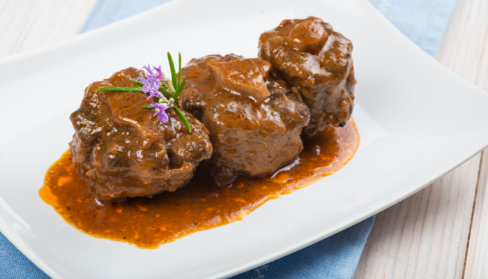
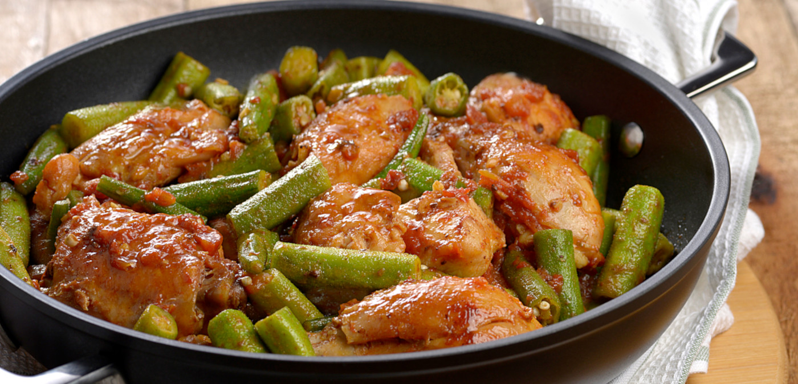
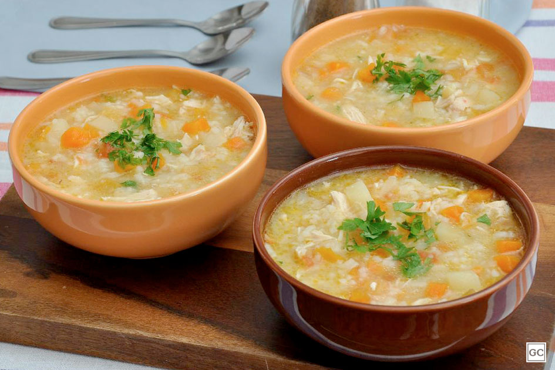
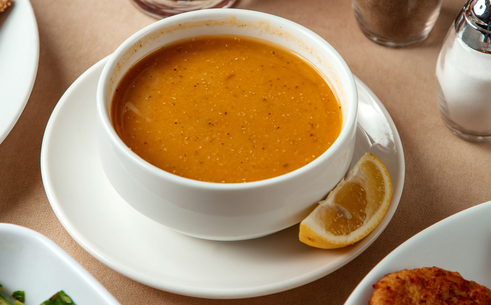
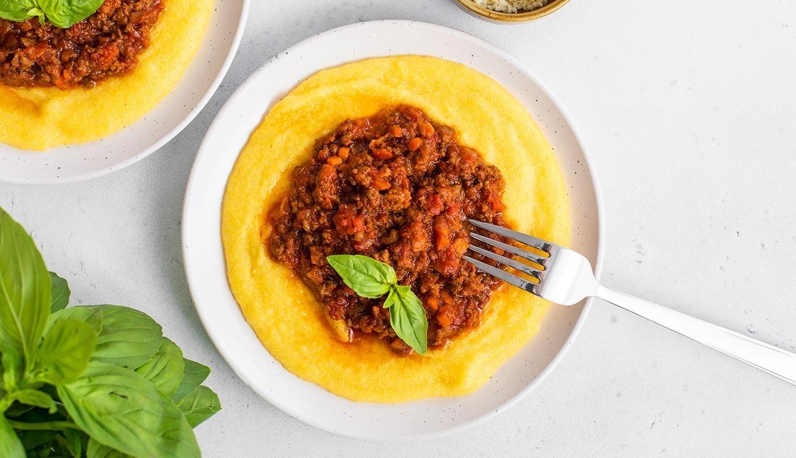
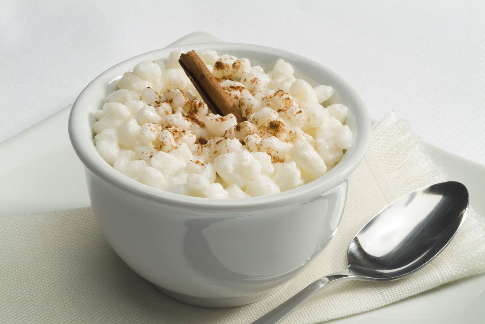

Comidas típicas afro-brasileiras:
Rabada: Surgiu na culinária europeia como uma sopa de rabo de boi em Portugal e apreciada na França. Era preparado um guisado com os rabos, adicionando legumes e verduras, como tomates, cebolas e pimentões, além de temperos frescos e secos. Apesar de ter sua origem ligada a receitas europeias, no Brasil, a rabada tem origem sertaneja, também como uma forma de aproveitar um corte não tão utilizado em outros preparos: o rabo de boi.

INGREDIENTES:
- 2 Kg de Rabada fresca
- Sal a gosto
- Cebola
- Alho
- Pimenta-do-Reino
- Cheiro verde
- 3 colheres de molho de tomate
- 4 colheres de sopa azeite
MODO DE PREPARO:
- Lave primeiramente a rabada com vinagre.
- Depois tempere com sal, pimenta - do - reino e cheiro verde.
- Numa panela de pressão de 7 litros, junte o azeite
- Depois, acrescente a cebola picada e o alho.
- Quando estiver dourado, jogue a rabada e mexa para agregar o tempero.
- Adicione água até que cubra a rabada, tampe e deixe cozinhando, após pegar pressão por 30 minutos.
- Em seguida, quando a rabada estiver mole, despeje o molho de tomate, verifique o sal e a pimenta.
- Deixe ferver mais um pouco e desligue.
- Deixe esfriar um pouco até que o óleo suba todo. Com uma concha retire todo o óleo que fica por cima, deixando o prato mais suave.
Feijoada: Reza a lenda que no século XVIII, período em que negros eram escravizados no Brasil,os senhores do engenho davam os restos de carnes de porco junto a feijão preto aos seus escravos, com isso eles misturavam os ingredientes criando um guisado de feijão preto com carne de porco.

INGREDIENTES:
- 1 Kg de feijão preto
- 100 g de carne seca
- 70 g de orelha de porco
- 70 g de rabo de porco
- 70 g de pé de porco
- 100 g de costelinha de porco
- 50 g de lombo de porco
- 100 g de paio
- 150 g de linguiça portuguesa
TEMPERO:
- 2 cebolas grandes picadinhas
- 1 maço de cebolinha verde picadinha
- 3 folhas de louro
- 6 dentes de alho
- Pimenta do reino a gosto
- 1 ou 2 laranjas
1 ou 2 laranjas
- 40 ml de de pinga
MODO DE PREPARO:
- 1° Coloque as carnes de molho por 36 horas ou mais, vá trocando a água várias vezes, se for ambiente quente ou verão, coloque gelo por cima ou em camadas frias.
- 2º Coloque para cozinhar passo a passo: as carnes duras, em seguida as carnes moles.
- 3º Quando estiver mole coloque o feijão, e retire as carnes.
- 4º Finalmente tempere o feijão.
Vatapá: O vatapá é de origem africana, e chegou ao Brasil por. intermédio dos africanos iorubás com o nome de ehba- tápa. É um prato típico das cozinhas nordestina e nortista .
O vatapá é influência da culinária africana trazida pelos africanos escravizados nos navios negreiros, a partir do século XVI. Com os ingredientes encontrados nesta nova terra e a necessidade de suplementar
sua dieta alimentar, desenvolveram outros pratos, que passaram a ser típicos da culinária brasileira.

INGREDIENTES:
- 1/2 kg de camarão descascado e lavado, sem cabeça e rabo
- 2 cebolas médias
- 2 tomates
- 1 leite de coco
- 1 azeite de dendê
- cheiro verde picado
- 10 pães
- 2 pimentas cheirosas
- sal a gosto
- pimenta (malagueta ou murupi) a gosto
MODO DE PREPARO:
- Refogue o camarão com 3 colheres de dendê junto com a cebola, o tomate, cheiro verde e pimenta cheirosa, reserve.
- Bata no liquidificador os pães com água, para 2 pães, 1 copo de água.
- Despeje o pão batido em uma panela e leve ao fogo.
- Deixe ferver, mexendo sempre, ele começará a engrossar.
- Quando começar a ferver acrescente o restante do dendê.
- Acrescente o camarão refogado.
- Adicione o sal e pimenta, mexendo sempre para não grudar no fundo da panela.
- Quando estiver quase pronto misture o leite de coco e retire do fogo.
Galinha com quiabo:

INGREDIENTES:
- 4 coxas de frango com pele e osso
- 4 sobrecoxas de frango com pele e osso
- 200 g de quiabo (cerca de 20 unidades)
- 1 pimentão amarelo
- 1 tomate italiano maduro
- 1 cebola
- 2 dentes de alho
- caldo de 2 limões
- 1 colher (chá) de cominho em pó
- 1 colher (chá) de colorau
- 2½ xícaras (chá) de água azeite a gosto
- sal e pimenta-do-reino moída na hora a gosto
MODO DE PREPARO:
- Dissolva o Caldo de Galinha Knorr na água e mantenha o caldo aquecido.
- Aqueça bem uma panela grossa e adicione o óleo de canola e o colorau. Doure os pedaços de frango (poucos por vez dos dois lados).
- Junte a marinada ao frango dourado e o caldo de frango. Deixe cozinhar com a panela tampada e fogo baixo por 1 hora. Retire os pedaços de frango e coe o caldo que sobrar na panela.
- Volte o frango e o caldo coado para a panela e junte o quiabo. Não mexa e deixe cozinhar com a panela tampada por 8 minutos.
- Coloque o cheiro-verde picado.
Acarajé:
INGREDIENTES:
- 1 kg de feijão fradinho
- 4 cebolas picadas
- Sal a gosto
- Azeite de dendê a gosto
MOLHO:
- Pimenta malagueta
- Azeite dendê
- 100 g de camarão
MODO DE PREPARO:
- Bata o feijão seco só para quebrar no liquidificador.
- Coloque de molho em bastante água, por mais ou menos 1 hora e meia para soltar a casca e os pontinhos pretos. Mude sempre a água e tire a casca e os pontinhos pretos que ficam boiando, escorra a água.
- Bata no liquidificador o feijão com as cebolas e o sal.
- Se precisar, ponha um pouco de água para bater melhor.
- Coloque a massa em uma vasilha e bata bem para ficar bem macia.
- Para bater use uma colher de pau.
- Acrescente dendê em uma frigideira para esquentar bem.
- Com uma colher pegue a massa e coloque para fritar.
- Depois de frito coloque-os em uma vasilha forrada com papel absorvente.
MOLHO:
- Machuque umas pimentas malaguetas.
- Ponha um pouco de dendê para esquentar e frite um pouco as pimentas machucadas.
- Acrescente o camarão e frite um pouco mais, tire do fogo e misture com um pouco de vatapá.
É maravilhoso, vale a pena experimentar.
Canja: A canja de galinha surgiu em meados no século XV, uns dizem que a receita veio da China trazida por portugueses, outros dizem que é uma receita que surgiu na Índia.

INGREDIENTES:
- 1/2 kg de coxinha da asa
- 1 cebola
- 4 dentes de alho
- 1 cenoura grande
- 1 tablete de caldo de galinha
- 1/2 xícara de arroz
- salsinha a gosto
- 1 colher (sopa) de óleo
- 1 e 1/2 litro de água fervente
MODO DE PREPARO:
- Tempere cada pedaço de frango com sal a gosto
- Em uma panela de pressão, coloque o óleo, o frango, a cebola, o alho e o caldo de galinha.
- Deixe fritar por alguns minutos e acrescente a água fervente
- Acrescente o arroz e a cenoura, corrija o sal e tampe a panela.
- Abaixe o fogo assim que a panela atingir a pressão e deixe cozinhar por 20 minutos.
- Finalize salpicando salsinha e sirva.
Pirão: No Brasil, ele surgiu através da cultura indígena, onde os índios após a pesca, misturavam a água do cozimento do peixe com a farinha de mandioca, resultando no famoso prato que conhecemos hoje.

INGREDIENTES:
- 300 g peixe (pintado/tambaqui) ou cabeças que sobram
- 250 g farinha de mandioca
- 2 tomates maduros picados
- 2 cebolas picadas
- 1/2 pimentao picado
- 3 tabletes de caldo de camarão
- 2 colheres de sopa de colorau
- 1 pimenta de cheiro picada
- 1 pimenta malagueta picada (opcional)
- Pimenta-do-reino a gosto
- Sal a gosto
- 6 colheres de sopa de azeite de dende (ou azeite de oliva)
- 2 litros de água
- Cheiro verde
MODO DE PREPARO:
- Colocar todos os ingredientes picados (exceto a farinha de mandioca e o cheiro verde) em uma panela de pressão
- Quando começar a ferver deixar por aproximadamente 40 minutos Após, coar o líquido em peneira fina passando uma colher para aproveitar ao máximo, descartando as sobras.Passar o caldo para outra panela e antes de ligar o fogo adicione a farinha aos poucos, mexendo para não empelotar.
- Levar ao fogo sempre mexendo, após iniciar a fervura deixar aproximadamente 10 a 15 minutos.
- Provar o sal, acrescentar o cheiro verde, caso queira o pirão mais duro acrescentar mais farinha aos poucos.
- Passar para uma travessa, colocar cheiro verde em cima.
- Fica ótimo com arroz branco e peixe ensopado.
Angu: O nome angu tem origem africana, mas o prato recebeu influência de portugueses e italianos, até chegar ao Brasil.

INGREDIENTES:
- 4 colheres (sopa) de fubá mimoso
- 150 ml de água para misturar o fubá
- 400 ml de água para ferver
- sal a gosto
MODO DE PREPARO:
- Os ingredientes do angu são simples mas o pulo do gato está mesmo no preparo. Apesar de também ser fácil, é preciso atenção para que ele fique perfeito e não desande. Sabe aquele angu empelotado, cheio de grumos e com aparência desagradável? Nada disso na sua casa! Olha só a seguir como fazer para ele ficar perfeito.
- O primeiro passo é adicionar o fubá, o sal e os 150 ml de água em uma panela. Sem levar ao fogo, misture tudo muito bem até que todo o fubá tenha se dissolvido na água. Leve para cozinhar em fogo baixo por cerca de 30 segundos e, em seguida, adicione a água fervida aos poucos, misturando sem parar com ajuda de um fouet ou uma colher de pau.
- É extremamente importante seguir o passo a passo dessa forma. Se você adicionar o fubá direto em toda a quantidade de água, ele vai empelotar e vai dar tudo errado. Depois que você tiver adicionado toda água fervida e a mistura estiver completamente homogênea, cozinhe em fogo médio para baixo por cerca de 5 minutos, mexendo de vez em quando para não queimar.
- No início, a textura ficará de mingau, mas o angu deve ser cozido por mais algum tempo para não ficar com gosto de farinha crua, até que ele comece a desgrudar das laterais e do fundo da panela. Assim que isso ocorrer, desligue o fogo e transfira o angu de fubá para o recipiente que irá servir. Sirva ainda quente!
- Meu angu empelotou, o que fazer agora? Bom, se algo deu errado no processo, existem algumas dicas para remover os grumos do seu creme. O ideal é batê-lo no liquidificador ou utilizar um mixer. Isso fará com que os grumos se dissolvam e se misturem novamente ao creme. Depois disso, para garantir que não ficou nenhum pedacinho, você pode passar por uma peneira!
Canjica: A origem de canjica é o termo canja. O termo viria de Kanji, termo da língua malaiala falada na região de Malabar, sudoeste da Índia e que significa “arroz com água”. Assim, conforme os estudiosos, o nome de batismo da canjica tem origem asiática.

INGREDIENTES:
- 500 g de canjica branca
- 1 lata de leite condensado
- 1 vidro de leite de coco
- 50 g de coco ralado úmido e adoçado
- 1 litro de leite
- 8 colheres (sopa) de açúcar
- canela em pó a gosto
MODO DE PREPARO:
- Lavar a canjica em água corrente
- Deixar de molho por aproximadamente 4 horas com o açúcar.
- Cozinhar na panela de pressão com 2 litros de água por, aproximadamente, 20 minutos ou até que esteja macia.
- Coloque em outra panela se necessário maior, acrescente o leite, o leite de coco, o leite condensado e o coco ralado
- Deixe ferver por 10 minutos mexendo sempre para não grudar no fundo da panela
- Desligue o fogo quando estiver bem cremoso.r
- Polvilhe a canela em pó.
▲